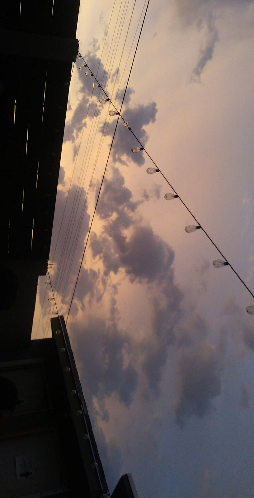

<html>
    <head>
        <title>Homepage</title>
        <body style="background-color: #dfbd9f;"></body>
    </head>
    <body>
        <div style="text-align: center;">

            <marquee><i>-The two most important days of your life are the day you are born and the day you find out why ❤ - "Mark Twain"</i></marquee>
    <!--Internal link-->
    <!--Target attributes;_blank,_self,_parent,_top-->
    <meta name="viewport" content="width=device-width, initial-scale=1">
    <style>
        body {
            margin: 0;
            font-family: Cambria, Cochin, Georgia, Times, 'Times New Roman', serif;
            color: #603e20;
        }
        .topnav {
            overflow: hidden;
            background-color: #603e20;
        }

        .topnav a {
            float: left;
            color: white;
            text-align: center;
            padding: 14px 16px;
            text-decoration: none;
            font-size: 17px;
            width: 16.6%;
        }

        .topnav a:hover {
            background-color: #adad85;
            color: darkolivegreen;
        }

        .topnav a.active {
            background-color: rgb(82, 139, 82);
            color: honeydew;
        }

            </style>
            </head>
            <body>
            
            <div class="topnav">
            <a href="index.html"><b>Home</b></a>
            <a href="biodata.html"><b>Biodata</b></a>
            <a href="family.html"><b>Family</b></a>
            <a href="gallery.html"><b>Gallery</b></a>
            <a href="contact.html"><b>Contact</b></a>
            </div>
            </div>
            </div>

</html>
<!DOCTYPE html>
<html>
    <head>
        <meta name="viewport" content="width=device-width, initial-scale=1">
    <style>
        div{
            font-family: 'Trebuchet MS', 'Lucida Sans Unicode', 'Lucida Grande', 'Lucida Sans', Arial, sans-serif;
        }
        .container {
        position: relative;
        text-align: center;
        color: white;
        }

        .centered {
        position: absolute;
        top: 50%;
        left: 50%;
        transform: translate(-50%, -50%);
        }
        
</style>
</head>
<body>

<div class="container">
    <div class="hero-image">
        <div class="hero-text">
  
  <div class="top"><h1 style="font-size:50px"> WELCOME TO BERRYMOCHI'S SPACE </h1></div>
  <br>
  <div class="top"><p><i><b>Heal, Learn, Grow, Love</b></i></p></div>
  <br>
  <div class="centered"><p><i><b>Bloom with Grace</b></i></p></div>
  <br>
  <div><button><a class="bottom" href="biodata.html">Explore</a></button></div>
</div>
    </style>
</body>
</html>